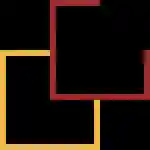

« Kung Fu Panda » :
De la Chine ancienne à 2008
Un succès tonitruant
Kung Fu Panda est un film d’animation des studio DreamWorks Animation, réalisé par Mark Osborne et John Stevenson en 2008. Ce film a très bien marché à l’international avec 631 744 560$ de recette au box-office international, pour un budget initial de 130 000 000$. En France, on compte 3 231 982 entrées, dont 753 074 entrées rien qu’en région parisienne. Pour voir la filmographie des réalisateurs, cliquez ici.

Po, le sixième cyclone
Dans une Chine ancienne vit Po, un panda élevé par une oie cuisinier dans son propre restaurant de nouille. Po rêve de devenir un grand maitre de kung fu, un peu comme les 5 cyclones, Maitres Singe, Mante, Grue, Maitresses Vipère et Tigresse, les élèves de maitre Shifu, lui-même disciple de maitre Oogway. Un jour Oogway annonce a Shifu qu’un terrible événement va bientôt arriver, l’évasion de Taï Lung.
Taï Lung, ancien disciple de Shifu qui le considérait comme son fils, possède un kung fu si puissant que personne dans la vallée ne peut l’arrêter. Personne sauf le guerrier dragon, un guerrier légendaire qu’Oogway désignera lorsqu’il sera présent parmi eux. Ce guerrier sera finalement choisi et il s’avèrera que ce soit Po, qui n’était venu juste pour voir qui des 5 cyclones serai choisi.
Evidemment, au début ni les 5 cyclones ni Shifu ne l’acceptera. Mais finalement, grâce au mots d’Oogway et à la détermination de Po, Shifu réussira à lui enseigner le Kung fu à Po en utilisant ses capacités. Po va donc se battre avec Taï Lung et finira par le vaincre grâce à son « gros corps de panda flasque et mou » et à la « prise de doigt Wuxi », une technique Kung fu qui désintègre littéralement son adversaire. Suite a son combat, toutes les personnes qui ne croyaient pas en lui l’accepte et reconnaissent sa valeur en tant que guerrier dragon.
